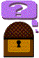
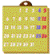
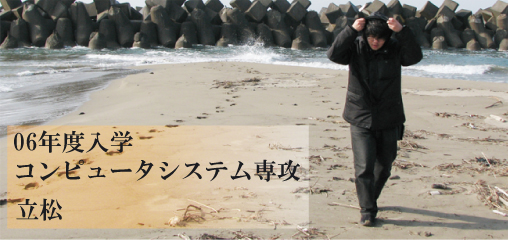
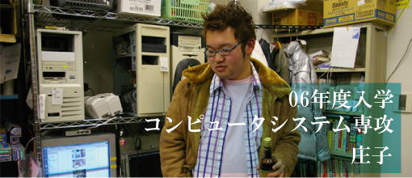
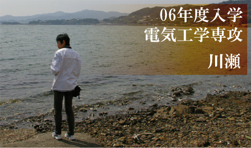
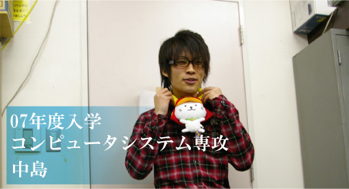
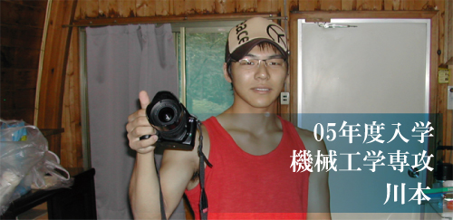

| ようこそ！新入生 先輩たちの紹介 説明会の日程 | ||||
|
ご入学おめでとうございます。システム工学研究会（略してシス研）は、永い歴史を誇る愛知工業大学の総合情報系サークルです。ここでは、そんなシス研の活動をご紹介しようと思います。
それでは、ひとつずつ説明していきましょう。 工科展への出展作品の製作
工科展というのは、大学祭と同時に行われる研究展のことです。研究室やサークル、学生などが日ごろの研究成果を発表する、いわば「技術系の祭典」です。教授審査により順位が決まり、上位に入賞すると賞金と記念品が貰えます。シス研も、学内唯一の総合情報系サークルとして、工科展には毎年参加しています。 外部教育プログラムの実施
外部教育プログラムというのは、コンピュータを勉強したい！という中高生に対し、当会員が講師として赴く活動です。講師として他校に赴き、生徒さんに授業をするので、技術に対する深い理解力が必要になります。 サーバ運営
あなたは「サーバ」って言葉、知っていますか？ メールアドレスの「@」以降のやつですね（yahoo.co.jpとかaitech.ac.jpとか）。あなたがいま見ている、このWebページもサーバから提供されています。 会誌の製作
今年度から、休止していた会誌の製作を再スタートさせました。新しい会誌の名前は「*ISM（イズム）」。創刊号は、印刷所さんに頼んで製本してもらいました。自分たちの活動が本になるというのは、楽しいものです。発行は、工科展・大学祭や、情報処理技術者試験のかぶる秋を除き、年3回を予定しています。 情報処理技術者試験の受験
春と秋にある情報処理の国家試験、「情報処理技術者試験」。試験前には、勉強会を開いたり、合格した友人や先輩に相談したり、という光景がよく見られます。高度な試験に合格した先輩も居ます。就職にも有利ですし、わたしたちと一緒に受験しましょう！ イベントの開催
いろいろと活動を並べましたが、忘れてはならないものが、「イベント」です。大学生活、勉強は勉強、遊びは遊びでしっかりやりましょう。 ？？？
？？？ ここでは、シス研の先輩の紹介を行います。研究会なので、みんな「研究員」です。それぞれ、思っていることを書き綴ってもらいます。 4回生 立松研究員
 首を突っ込みたがる性分なので、ソフトからハード、サーバにネットワーク、画像処理やDTP（卓上出版）まで何にでも手を出している。シス研は、様々な活動を行っているので、いろいろな事を試すことができる。工科展ではリーダーを経験し、チームワークの大切さと、コンピュータを理解する為にはプログラミングがいかに重要かを確認。サーバ絡みでは、UNIXという小宇宙を体験。会誌の発行では、業界用語に悩まされながら印刷のプロセスを知る。次々に、わくわくする試練が待っている。シス研は、見聞を広めるには最高なサークルだ。
シス研の風景
授業のあるなしに関わらず、ほぼ毎日顔をだすシス研。 シス研のここが好き
個性的な面々が多い。パソコンだけでなく、クルマやバイクの話題に、有名な小説家の話、はやりのアニメの話、新しく出たタバコ・・・ シス研に属しているだけで、様々な「情報」に触れることができる。また、個性的であっても、気配りのできる人が多くて、なごむ。今日の夕飯はどこに行こうか、楽しくなる。そんなシス研が好き。 来たれ！新入生
実は私、会長である。シス研は、自主性という言葉がぴったり当てはまるサークルなので、やる気次第で何でもできる。手柄を立てて新聞に載ることも可能かもしれない。 4回生 庄子研究員
 シス研へ入会して以来、主にプログラミングを中心とした技術の勉強を続けています。「コンピュータの技術を学びたい」という思いを持った同士の多いサークルなので、部員の間で切磋琢磨しながら勉強を続けることができ、また励みになります。昨年は、シス研が工科展に出展した作品のプログラミングを担当し、苦しいながらも1つずつ確実にプログラムを作り上げていく中で、自分にとって大きなスキルアップをはかることができました。これらの経験が、自分の前にある難関に立ち向かう力になっていくことを信じて、日々勉強を続けています。 シス研の風景
プログラミング以外にも、電子回路なら任せろという位電気系に強い人、ネットワーク技術の鬼、また車について常人を凌駕する知識を持つ人、果ては軍事関係の知識が凄い人など、実に幅広い個性の入り混じった部活です。そんな中に身を置くだけで、自分が物凄い知識人になった気分に浸れる…そんな部活です(笑)。 シス研のここが好き
まず、何といっても強い拘束力がないこと。サークルの活動は基本的に個人でやりたいことをやる方針なので、自分が勉強したい、挑戦したいと思ったことに積極的に取り組んでいけるという姿勢が大好きです。そして、皆仲がよく、自分がわからないことや疑問に思っていることに対して、ヒントや解決策を教えてくれる人がいること。問題点にぶつかった時、気さくに質問できるので、何かに一生懸命取り組むのに良い雰囲気だと思います。 来たれ！新入生
皆さんは、「こんなものが作れたらいいけれど、僕には技術がないなぁ…」とか、「こういうものが作れそうだけれど、まだ誰もやってないのかな？作ってみたいなあ」と思ったことはありませんか？シス研は、そんな貴方の夢をかなえるのにピッタリのサークルです。入部にあたって必要なものは「やる気」と「挫けない精神力」。これだけがたっぷりとあれば十分です。自分で色んなものを作ってみたいと思っている貴方、ぜひ一度シス研の戸を叩いてみてください。貴方の夢を叶えるための工房が、そこにあるかもしれませんよ。 3回生 奥村研究員
プログラム、サーバ、自作PCと、それぞれある程度のところまで取り組んできました。実際にやってみると、まず右も左もわからず戸惑うのだけれど、やっぱり身近にそれができる人がいると、一気に現実的に考えることができます。必要なら部室で助言を請うこともできるし、教材を借りることもできる。学ぶには最適の環境ですから、その環境を生かしたいと思っています。生かしきれているのかは甚だ疑問ですが、これからはもっと掘り下げて学ぶつもりです。 シス研の風景
入部してから、部室はすぐに、パソコン関係の話はもちろん、全く別の話も気軽にできる居心地の良い場所になりました。夜遅くまで居ると、そのときのメンバーで夕食に行きます。車で送ってもらったりも何度もしてもらいました。 シス研のここが好き
このサークルの人たちは、本当に明るくて行動的な人ばかりです。そして後輩に優しい（笑）。 来たれ！新入生
入った当初は、何もできなくてかまいません。だって、できるようになるために入るんですから。 4回生 川瀬研究員
 高校の頃からちょこちょこっと趣味で電子工作を行っており、今回の工科展にて電光掲示板の回路の部分の製作をやらせていただきました。現在は愛車のカブをいじっていますが電装関係から携帯電話などの充電用の電源の回路の製作や、電光掲示板の回路の再設計を考えています。 シス研の風景
非常にユニークな面々がそろっており、パソコン関係はもちろん 車やバイクなどのパソコン以外の趣味を持った人がいるのでいろいろな話題で盛り上がることが出来ます。 シス研のここが好き
サークルの雰囲気が結構気楽で授業の合間、授業後、昼時などちょっとした事でもぶらりと寄ることが出来るし、どことなくのほほんとしていて笑いの耐えないサークルです。 来たれ！新入生
サークル内ではかなり自由に出来る。授業の課題や興味のある勉強、他専攻の人との交流などこのサークルはいろいろなことが出来ます。パソコン関係に興味のある方や何かやってみたいとい方はぜひうちのサークルに入ってください。 １回生 中島研究員
 シス研の風景
僕の趣味と合う人が多いです。部室に行けばその話題で盛り上がれます。また、普段聞けないようなコアな話も聞けるので勉強になります。 シス研のここが好き
部室の空気ですね。なんか落ち着くというか。授業でわからない事があったときに、先輩たちに聞くと優しく教えてくれるので非常に助かってます。 来たれ！新入生
僕は正直パソコン関係にそこまで詳しくなかったです。でも、このサークルに入っていろいろできるようになったと思います。パソコンに興味のある方はこのサークルで技術の向上を目指してみませんか？ OB 川本研究員
 シス研の風景
中学、高校の頃からパソコンの自作に夢中だった。大学に入り、バイトもして金銭にある程度の余裕が出てくると、ますますのめり込んでいった。そんな趣味のことを話せる場所、話せる人を求めてシス研に入ることを決めた。 シス研のここが好き
基本的に活動時間は自由。自分は家も遠く、バイトの日数も多いのだが、このサークルは僅かな時間でも気軽に顔を出すことができる。家での空いた時間に自分で学習したことを、ソフトや動作環境の整った部室のコンピュータを使って確かめる。そういった使い方もできるのがこのサークルの魅力の一つでもある。分からないことは何でも上級生に聞くことができる。どの学年の人間とも気軽に接することができるのもシス研の良さである 来たれ！新入生
部室へ行けば、勉強をするなり、課題を片付けるなり、雑談をするなり自由な時間が始まる。集まった人間で晩御飯を食べに行ったり、カラオケやゲームセンターに遊びに行くことや大須に部品を買いに行ったりする。定期的な飲み会、夏にはキャンプに行ったりと、一年を通じてイベントがある。 説明会のお知らせ(09年度）
説明会を兼ねた、入会受付を行います。シス研に限らず、愛工大に関わる質問にもお答えします（笑）。日程は以下の通りです。
お誘いあわせのうえ、ご参加ください。筆記用具を持参になり、気軽な服装でお越しください。 シス研の場所
シス研の場所は、大学の奥のほうです。 Point3
連絡は、会長の奥村 k07025kk@aitech.ac.jp までお願いします。 |
||||